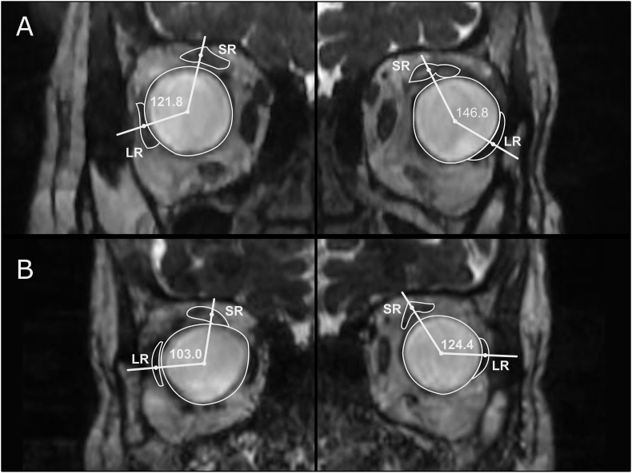
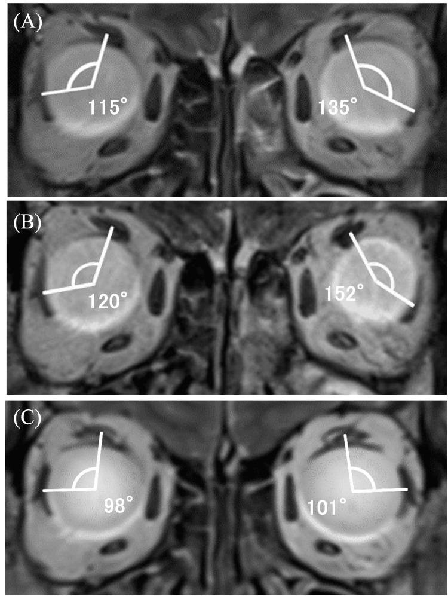
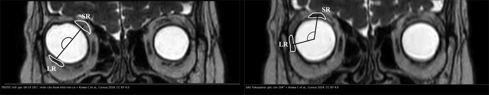
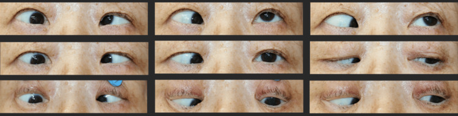
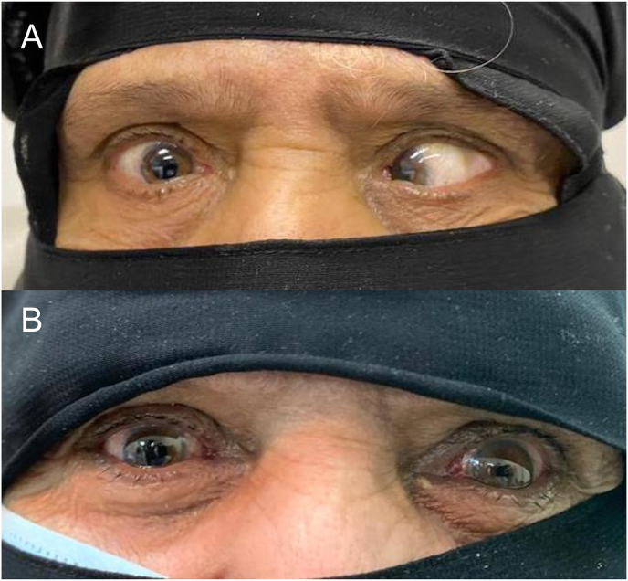

3212 — Hội chứng mắt nặng (heavy eye syndrome) ở cận thị cao: lác trong–hạ nhãn cầu tiến triển, góc SR–LR trên MRI / Heavy eye syndrome & myopic strabismus fixus
Tags: pattern:lac-trong pattern:ha-nhan-cau pattern:han-che-dang pattern:han-che-nang-mat pattern:mat-nang pattern:lech-duong-co pattern:lac-tien-trien vung:mat vung:hoc-mat vung:co-van-nhan vung:non-co anatomy:co-truc-ngoai anatomy:co-truc-tren anatomy:day-chang-SR-LR anatomy:hoang-diem protocol:MRI-hoc-mat protocol:quasi-coronal protocol:do-goc-SR-LR protocol:do-truc-nhan-cau protocol:luoi-9-huong-nhin protocol:CT-hoc-mat score:goc-SR-LR score:truc-nhan-cau score:PD
Mức chắc chắn (certainty): tổng hợp y văn (literature synthesis) — ghép 1 đoàn hệ 68 bệnh nhân lác trong ở người cận thị, 32 người có MRI đủ chất lượng (Gilhooley MJ, Sarwani O, Johnson G et al., J Neuroophthalmol 2026, PMID 42757761, PMC13750804, CC BY 4.0), 1 tổng quan 18 nghiên cứu / 89 bệnh nhân loop myopexy (Su Y, Shen Q, Fan X, J Ophthalmol 2016, PMID 27239338, PMC4863101, CC BY 4.0), 3 ca có MRI trước–sau mổ (Alarfaj M, Al-Owaid A, Alkhaldi H et al., Am J Ophthalmol Case Rep 2022, PMID 35243158, PMC8858879, CC BY 4.0; Koiwa C, Negishi T, Sakemi F et al., Cureus 2024, PMID 38741804, PMC11090074, CC BY 4.0; Hirota A, Goseki T, Kunimi K et al., Cureus 2025, PMID 40895942, PMC12392025, CC BY 4.0), 2 ca kỹ thuật/thất bại mổ (World J Clin Cases 2022, PMID 36387826, PMC9649532, CC BY-NC; Medicine 2022, PMID 36596031, PMC9803451, CC BY; Case Rep Ophthalmol 2021, PMID 33613253, PMC7879241, CC BY-NC) và 2 nghiên cứu MRI phân biệt với lác tuổi già (PLoS One 2025, PMID 40424265, PMC12111637, CC BY; Jpn J Ophthalmol 2025, PMID 39903417, PMC11821714, CC BY). Chỗ suy luận hình học ghi rõ "suy luận".
Vì sao bài này quan trọng: đây là nguyên nhân lác chỉ gặp ở mắt cận thị nặng nhưng lại bị mổ như lác trong thông thường — và mổ sai thì không đỡ, thậm chí nặng hơn. Một bệnh nhân đã trải qua 3 lần mổ cắt cơ trực trong trong 33 năm mà mắt vẫn dính vào trong–dưới (PMC9649532). Trong khi đó, thủ thuật đúng — buộc hai bụng cơ trực trên và trực ngoài lại (Yokoyama) — chỉ cần một lần và đưa mắt về vị trí chấp nhận được. Câu hỏi CĐHA rất cụ thể: nhãn cầu có thoát khỏi nón cơ không, và góc giữa hai cơ rộng bao nhiêu trên MRI? Con số đó quyết định chọn mổ cơ ngang hay mổ theo cơ chế (loop myopexy).
1. Tổng quan bệnh học – cơ chế hình ảnh: vì sao mắt dài lại "dính" vào trong–dưới
1.1 Cơ chế: nhãn cầu chui ra khỏi nón cơ ở góc trên–thái dương
- Ba mốc giải phẫu giữ nhãn cầu trong nón cơ: các ròng rọc cơ (pulleys), vách gian cơ (intermuscular septum) và — quan trọng nhất ở đây — dải liên kết giữa cơ trực ngoài và cơ trực trên (SR-LR band), một dải mô liên kết chạy giữa hai bụng cơ ở phía sau hốc mắt (PMC4863101; PMC13750804).
- Khi nhãn cầu dài ra (trục nhãn cầu > 32 mm được mô tả là mốc "tới hạn" — Aoki và cs., dẫn qua PMC13750804), cực sau nhãn cầu lồi ra ngoài nón cơ ở góc trên–thái dương (superotemporal). Dải SR–LR bị giãn/rão theo tuổi, không còn giữ được nhãn cầu → cơ trực ngoài trượt XUỐNG DƯỚI, cơ trực trên trượt VÀO TRONG, và nhãn cầu "rơi" vào giữa hai cơ (PMC8858879; PMC12392025).
- Vì sao lác trong + hạ nhãn cầu (esotropia + hypotropia), chứ không phải một hướng? [suy luận hình học] Đường tác dụng của LR bị đẩy xuống dưới có thành phần hạ nhãn cầu và mất thành phần dạng; đường tác dụng của SR bị đẩy vào trong có thành phần đưa mắt vào trong và mất thành phần nâng. Cộng thêm hạn chế cơ học do nhãn cầu căng ép sát cơ và vách gian cơ dư thừa, bệnh nhân có hạn chế dạng + hạn chế nâng, cuối cùng mắt cố định ở tư thế trong–dưới (myopic strabismus fixus).
- Tên gọi "heavy eye" là một từ sai lịch sử: không phải mắt "nặng" do trọng lực, mà do hỏng bộ giữ cơ học. Vì vậy phẫu thuật đúng cũng không phải "cắt cơ cho cân" mà là đưa nhãn cầu trở lại nón cơ.
1.2 Đo cái gì trên ảnh: góc SR–LR (SR-LR displacement angle)
- Mặt phẳng quasi-coronal (vuông góc trục hốc mắt), cắt 8 mm trước chỗ nối nhãn cầu–thần kinh thị; xác định trọng tâm (centroid) của nhãn cầu (GC), của bụng cơ trực trên và bụng cơ trực ngoài; kẻ đường GC–SR và GC–LR; góc giữa hai đường là góc SR–LR (PMC13750804, dựa trên phương pháp centroid tự động của Tan & Demer).
- TẠI SAO góc này tăng: [suy luận hình học] Hai bụng cơ nằm trên thành nón cơ; khi cực sau nhãn cầu chui vào khe giữa chúng, mỗi bụng cơ bị đẩy ra xa trọng tâm nhãn cầu theo hai hướng khác nhau → góc mở rộng. Góc càng lớn = nhãn cầu càng thoát khỏi nón cơ = cơ chế HES càng rõ. Đây là lý do một con số độ thay được cho mô tả định tính "cơ bị lệch".
- Con số tham chiếu (đo cùng phương pháp, cùng bài):
| Nhóm | Góc SR–LR | Trục nhãn cầu | Nguồn |
|---|---|---|---|
| Không lác (chứng, MRI lâm sàng) | 96,22 ± 1,23° | 23,94 ± 0,35 mm | PMC13750804 |
| Cận thị có lác trong (thực hành, trung vị) | 107,5° | 27,30 mm | PMC13750804 (n = 32 có MRI) |
| Lác do lồi hắc mạc (staphyloma) | ~109° | — | dẫn qua PMC13750804 |
| Lác tuổi già (sagging eye syndrome) | ~104° | — | dẫn qua PMC13750804 |
| HES điển hình | ~121° (ca nặng tới 181°) | 27–34 mm | dẫn qua PMC13750804; PMC11090074 |
- Đọc bảng này đúng cách: 107,5° không phải ngưỡng chẩn đoán HES — đó là trung vị của mọi bệnh nhân cận thị có lác trong, trong đó chỉ 2/68 (2,9%) được ghi nhận HES (PMC13750804). Góc ~120° trở lên + nhãn cầu thoát nón cơ mới là vùng của HES.
1.3 Các con số phải nhớ
| Biến số | Số liệu | Nguồn |
|---|---|---|
| Tuổi / khúc xạ / độ lác lúc khám (đoàn hệ thực hành) | 42,4 ± 2,2 tuổi; SE trung vị −8,25 D; lác trung vị 20 PD (gần và xa) | PMC13750804 |
| Tương quan khúc xạ – độ lác | r = −0,044, P = 0,76 → không có liên hệ | PMC13750804 |
| Tỷ lệ HES trong lác trong ở người cận thị | 2/68 (2,9%) — đa số vẫn là lác trong thông thường | PMC13750804 |
| Mốc trục nhãn cầu "tới hạn" | 32 mm (Aoki, dẫn qua) — trên mốc này thay đổi giải phẫu SR–LR mới rõ | PMC13750804 |
| Bằng chứng mổ loop myopexy | 18 nghiên cứu, 89 bệnh nhân, 5–78 tuổi | PMC4863101 |
| Ngưỡng chọn mổ theo độ lác | Yokoyama đơn thuần: tới 40Δ; Yokoyama + lùi cơ trực trong (MR recession): 12–85Δ | PMC4863101 |
| Ca trục nhãn cầu dài nhất có MRI | 33,97 mm; góc 181° → 104° sau Yokoyama + lùi MR | PMC11090074 |
| Ca có đai củng mạc hai mắt | góc 121,8° / 146,8° → 103,0° / 124,4° sau loop myopexy bằng dải silicone | PMC8858879 |
| Tiến triển tự nhiên 7 năm | 115°/135° → 120°/152°; sau mổ 98°/101° | PMC12392025 |
| Quá chỉnh sớm sau Yokoyama | ngày 1: 50Δ XT gần / 35Δ xa → 1 tháng: 10Δ Xp / 4Δ Xp | PMC12392025 |
| Biến chứng "pulled-in-two" cơ trực trong | lác trong > 45°, hạ > 15°; sau mổ 45Δ XT, phải mổ lần 2 | PMC9803451 |
| Lác tuổi già (ARDE) so chứng | LR sa xuống 5,1° (p = 0,048); tỷ lệ diện tích MR/LR +26% | PMC12111637 |
| SES không cận thị | trục nhãn cầu 23,6 ± 0,6 mm; góc nghiêng LR 22 ± 6° | PMC11821714 |
1.4 Vật lý: vì sao MRI là phương tiện đúng, và vì sao CT chỉ là phương án hai
- MRI (1,5–3 T, chuỗi T1W hoặc T2W, lát 2–3 mm): cơ và mỡ hốc mắt tương phản tự nhiên; không cần thuốc cản quang để thấy đường đi bụng cơ, dải SR–LR, vách gian cơ dư thừa và lồi hắc mạc. Đây là phương tiện duy nhất trả lời được câu hỏi "nhãn cầu có thoát nón cơ theo hướng nào". Lưu ý: MRI không phải máy đo trục nhãn cầu chính xác như sinh trắc quang — xem bài 429.
- CT: thấy cơ và xương, liều thấp hơn nhiều so với MRI ở trẻ, nhưng tương phản mô mềm kém và chỉ nên dùng khi MRI chống chỉ định/không có. Ca có đai củng mạc cho thấy vật liệu silicone có thể gây giả ảnh và méo đường đi cơ — một lý do nữa để đọc cả hai bên và so với mô tả lâm sàng.
- Siêu âm: hữu ích để loại trừ bong võng mạc/lồi hắc mạc ở mắt cận thị nặng, nhưng không đo được góc SR–LR.
2. Mẫu hình + chẩn đoán phân biệt (gamut)
Mẫu hình trung tâm: *"Người lớn cận thị nặng, lác trong tăng dần kèm hạ nhãn cầu, hạn chế dạng và nâng; nhãn cầu dài; trên MRI quasi-coronal, LR bị đẩy xuống dưới – SR bị đẩy vào trong, góc SR–LR > 107–120°, cực sau nhãn cầu lồi ra ngoài nón cơ."*
Ba câu hỏi phải trả lời trước khi đặt tên:
- Nhãn cầu có thực sự thoát khỏi nón cơ không? Có → HES. Không, chỉ cơ sa nhẹ → nghĩ lác tuổi già/SES hoặc lác trong thông thường.
- Trục nhãn cầu bao nhiêu, có lồi hắc mạc không? Dài > 27 mm + lồi hắc mạc → nhóm cận thị bệnh lý; nhưng HES mới cần mổ theo cơ chế.
- Có nguyên nhân khác chồng lên không? Đai củng mạc cũ, liệt dây VI, bệnh tuyến giáp, nhược cơ, sau mổ cơ trực trong → thay đổi chỉ định.
Gamut theo cơ chế:
- HES / myopic strabismus fixus: lác trong + hạ tiến triển, hạn chế dạng + nâng, góc SR–LR rộng, nhãn cầu thoát nón cơ; có thể một bên hoặc hai bên.
- Lác tuổi già / lác xa do sa cơ (sagging eye syndrome, SES; age-related distance esotropia, ARDE): người lớn tuổi, không cận thị nặng (trục 23,6 mm), lác xa, LR sa xuống 5,1° so chứng, không có nhãn cầu thoát nón cơ (PMC11821714; PMC12111637).
- Lác do lồi hắc mạc (staphyloma-related esotropia): nhãn cầu dài + lồi hắc mạc sau cực; góc ~109°; điều trị có thể chỉ cần cơ ngang nếu chưa thoát nón cơ.
- Lác sau đai củng mạc/đai vòng: cơ học do đai + có thể đồng thời HES (ca PMC8858879) — đừng quy hết cho đai.
- Liệt dây VI: khởi phát cấp, lác không đồng hành (incomitant), không dài nhãn cầu, thường có nguyên nhân thần kinh; MRI để loại trừ.
- Bệnh mắt tuyến giáp (TED): thân cơ to, chừa gân, hạn chế nâng, lồi mắt; khác hẳn lệch đường đi cơ.
- Viêm cơ hốc mắt/giả u: đau, cả gân, đáp ứng corticoid; MRI thấy cơ dày + ngấm thuốc.
- Nhược cơ: lác dao động, mỏi, không hạn chế cố định; không có bất thường giải phẫu trên MRI.
- Do can thiệp (iatrogenic): sau cắt/cắt cụt cơ trực trong, sau mổ bong võng mạc — bệnh cảnh lác cơ học; cần phân biệt với HES thật (PMC9649532; 1499).
- NF1 có loạn sản xương bướm: lồi mắt đập theo mạch + HES — bệnh cảnh hiếm, cần CT/MRI xương (PMC8542118).
Mnemonic HEA-VY: High myopia · Elongated axial length · Angle SR–LR rộng · Vertical hypotropia · Yoke (dải SR–LR) hỏng.
3. Bảng so sánh phân biệt (ma trận đối chiếu)
| Thực thể (entity) | Hình ảnh điển hình (MRI quasi-coronal / lâm sàng) | Chốt vào (rule-in) | Chốt loại (rule-out) | Gợi ý xác nhận |
|---|---|---|---|---|
| HES / myopic strabismus fixus | Nhãn cầu dài 27–34 mm, cực sau lồi ra ngoài nón cơ trên–thái dương; LR xuống dưới, SR vào trong; góc > 107–120°; hạn chế dạng + nâng | Nhãn cầu thoát nón cơ + góc SR–LR ≥ ~120° + trục > 27 mm | Góc bình thường (~96°), không lồi hắc mạc, không hạn chế dạng → lác trong thông thường | MRI quasi-coronal + lưới 9 hướng nhìn; đo góc 2 bên |
| Lác tuổi già (SES/ARDE) | Trục nhãn cầu bình thường (23,6 mm), LR sa 5,1°, không thoát nón cơ; lác xa | Tuổi cao + lác xa + trục bình thường + LR sa nhẹ | Trục > 27 mm, nhãn cầu lồi ra ngoài nón cơ | MRI + đo trục; so chứng cùng tuổi |
| Lác do lồi hắc mạc | Lồi hắc mạc sau cực, góc ~109°, nhãn cầu dài nhưng chưa thoát hẳn nón cơ | Lồi hắc mạc + góc trung gian 107–115° | Góc ≥ 120° + nhãn cầu nằm giữa SR–LR → HES | MRI + B-scan/ OCT hậu cực |
| Lác sau đai củng mạc | Đai/vật liệu silicone, giả ảnh, cơ bị kéo; có thể kèm HES | Tiền sử đai + hình ảnh vật liệu | Không có vật liệu, bệnh cảnh điển hình HES | Hỏi tiền sử mổ; MRI cả hai mắt |
| Liệt dây VI | Không dài nhãn cầu, không lệch đường cơ; lác không đồng hành, hạn chế dạng một mắt | Khởi phát cấp + không đồng hành + MRI sọ bình thường | Lác tiến triển nhiều năm + nhãn cầu dài + hạn chế cả nâng | Khám thần kinh; MRI sọ–hốc mắt |
| Bệnh mắt tuyến giáp (TED) | Thân cơ to, chừa gân, cơ dày đối xứng, lồi mắt | Cơ to chừa gân + bệnh tuyến giáp | Cơ không to, chỉ đường đi lệch | TSH/TRAb; MRI/CT |
| Viêm cơ hốc mắt | Cơ dày cả gân, ngấm thuốc, đau | Đau + cả gân + đáp ứng corticoid | Không đau, cơ không dày | MRI + thử corticoid |
| Sau cắt/cắt cụt cơ trực trong | Mất cơ/bụng cơ, xơ dính; lác cố định nhiều năm | Tiền sử mổ cơ, thấy cơ bị cắt | Cơ còn đủ, chỉ lệch đường đi | Hồ sơ mổ + MRI |

*Bệnh nhân nữ 56 tuổi, đã đặt đai củng mạc hai mắt: (A) trước mổ — góc 121,8° (phải) và 146,8° (trái), nhãn cầu lồi ra ngoài nón cơ, LR bị đẩy xuống dưới, SR vào trong, vách gian cơ dư thừa; (B) sau loop myopexy bằng dải silicone — góc giảm còn 103,0° và 124,4°. Ảnh: Alarfaj M et al., Am J Ophthalmol Case Rep 2022, CC BY 4.0.* Lưu ý kỹ thuật: hai mắt được cắt ở hai mức khác nhau để lấy đúng bụng cơ — vì vậy đừng so góc giữa hai mắt như hai số tuyệt đối, hãy so trước–sau trên cùng một mắt.Ba dấu hiệu "đọc đúng" trên ảnh
- Cực sau nhãn cầu nằm GIỮA hai bụng cơ, không nằm trong nón: đây là dấu chốt, mạnh hơn con số góc. Trên lát cắt chuẩn, nhãn cầu "phình" ra khỏi đường nối hai bụng cơ.
- LR mất vị trí ngang tầm với SR: bình thường hai bụng cơ gần vuông góc quanh nhãn cầu; trong HES LR tụt xuống thấp, góc mở rộng.
- Vách gian cơ dư thừa + cơ áp sát nhãn cầu: dấu phụ, giúp phân biệt với lồi hắc mạc đơn thuần.
4. Protocol + cách chọn mổ
4.1 Trình tự hình ảnh tối thiểu
- Lưới 9 hướng nhìn + đo độ lác (PD) gần/xa + test hạn chế cơ học (forced duction) — trả lời "hạn chế thật hay do liệt".
- Đo trục nhãn cầu bằng sinh trắc quang; nếu không đo được (đục môi trường, mắt bơm dầu/khí) → MRI/CT theo bài 429.
- MRI hốc mắt 1,5–3 T, lát 2–3 mm, quasi-coronal (vuông góc trục hốc mắt) + axial; T1W ± T2W không cần cản quang; chụp cả hai hốc mắt để so.
- Đo góc SR–LR tại lát 8 mm trước chỗ nối nhãn cầu–thần kinh thị, theo trọng tâm; ghi số độ cho từng mắt, cùng mức lát nếu có thể.
- Tìm lồi hắc mạc, bong võng mạc, dày củng mạc sau, vật liệu đai — vì các bệnh này đổi cả chẩn đoán lẫn tiên lượng.
- Loại trừ nguyên nhân khác: TSH/TRAb nếu nghi TED; khám thần kinh nếu lác không đồng hành; test nhược cơ nếu dao động.
4.2 Không có hệ phân độ chuẩn hóa — nhưng có ngưỡng quyết định
- Ngưỡng giải phẫu: góc ~96° (bình thường) → 104–109° (SES, lồi hắc mạc) → ~120° trở lên (HES điển hình). Góc chỉ có giá trị khi nhãn cầu thoát nón cơ.
- Ngưỡng mổ (theo tổng quan 89 bệnh nhân, PMC4863101):
- Yokoyama đơn thuần (buộc SR–LR): hiệu quả tới 40Δ lác trong;
- Yokoyama + lùi cơ trực trong: dùng cho 12–85Δ;
- không lệch đường đi cơ → mổ cơ ngang kinh điển vẫn hợp lý (thể sớm, chưa thoát nón cơ).
- Kỹ thuật: buộc hai bụng cơ ~15 mm sau chỗ bám (nguyên bản; các ca dùng 12–14 mm), chỉ không tiêu hoặc dải silicone; buộc một phần bụng cơ để giảm nguy cơ thiếu máu đoạn trước; tránh xuyên củng mạc khi khâu.
- Sau mổ: ngày 1 có thể quá chỉnh rõ — ca PMC12392025 có 50Δ XT gần / 35Δ xa, giảm còn 10Δ/4Δ sau 1 tháng. Không mổ lại sớm vì "quá chỉnh"; theo dõi ít nhất 1 tháng.
- Điều trị tạm: lăng kính/tiêm botulinum cho lác nhỏ hoặc chờ mổ; không thay thế được phẫu thuật khi đã cố định.
flowchart TD
A[Lac trong o nguoi can thi nang] --> B{Co han che dang va nang?}
B -->|Khong| C[Lac trong thong thuong: do lac, thu kinh, theo doi]
B -->|Co| D[MRI hoc mat quasi-coronal + do truc nhan cau]
D --> E{Nhan cau thoat non co va goc SR-LR >= 120 do?}
E -->|Khong| F[Can nhac SES, loi hac mac, lac sau dai: do lai goc va truc]
E -->|Co| G{Do lac <= 40 PD?}
G -->|Co| H[Yokoyama don thuan]
G -->|Khong| I[Yokoyama + lui co truc trong]
H --> J[Theo doi 1 thang: chu y qua chinh som]
I --> J
F --> K[Mo co ngang kinh dien neu chua thoat non co]
4.3 Vì sao "cắt cơ ngang đơn thuần" thất bại
- Cắt/lùi cơ trực trong chỉ giải phóng lực kéo ngang, nhưng không đưa nhãn cầu trở lại nón cơ. Nhãn cầu vẫn nằm giữa SR và LR, nên lực hạ + lực đưa vào trong vẫn còn → lác tái phát.
- Ca PMC9649532: 3 lần mổ (cắt cụt cơ trực trong + lùi cơ trực ngoài) trong 33 năm, không đỡ lần nào; sau Yokoyama hai bên + lùi MR phải, hai mắt cân bằng trong 6 tháng.
- Ngược lại, Yokoyama không sửa được hạn chế dạng nếu cơ trực trong đã co rút nặng — ca PMC11090074 phải lùi MR cùng lúc vì hạn chế dạng còn lại ngay cuối thì Yokoyama.
5. Biến thể bình thường và cạm bẫy
- Góc SR–LR trên MRI lâm sàng dao động: ca thực hành không có điểm cố định thị giác (không như nghiên cứu), lát cắt dày hơn, đầu xoay nhẹ → cùng một mắt có thể lệch vài độ. Vì vậy 107,5° là trung vị của một đoàn hệ hỗn hợp, không phải ngưỡng.
- Hai mắt không cùng mức lát: tác giả ca PMC8858879 ghi rõ phải lấy hai mức khác nhau để thấy bụng cơ hai bên — nghĩa là so sánh chéo hai mắt có thể sai. Ưu tiên so trước–sau trên cùng mắt.
- Nhầm với lác trong thông thường: 97% bệnh nhân cận thị có lác trong trong đoàn hệ không phải HES. Gọi HES tràn lan dẫn tới mổ nặng hơn cần thiết; bỏ sót HES dẫn tới mổ lặp vô ích.
- Nhầm hạ nhãn cầu với liệt dây IV/skew deviation: hạ nhãn cầu trong HES kèm hạn chế nâng + nhãn cầu dài; liệt dây IV có test Bielschowsky dương và không dài nhãn cầu.
- Bỏ sót bệnh hậu đoạn: mắt cận thị nặng > 27 mm có nguy cơ bong võng mạc, lồi hắc mạc, bệnh hoàng điểm cận thị. "Satisfaction of search" khi đã thấy lác là bỏ qua nguyên nhân mù.
- Đai củng mạc cũ: vừa gây giả ảnh vừa có thể là nguyên nhân lác riêng; ca PMC8858879 cho thấy HES vẫn xảy ra trên mắt đã đai — đừng quy hết cho đai, cũng đừng bỏ qua đai.
- Quá chỉnh sớm sau Yokoyama: 50Δ XT ngày 1 có thể tự về 10Δ Xp sau 1 tháng; mổ lại sớm là sai lầm.
- Cơ trực trong co rút lâu năm: nguy cơ pulled-in-two (đứt cơ trong khi mổ) — ca PMC9803451 đứt cơ, hậu quả 45Δ XT và phải mổ lần hai. Đây là lý do không nên "cắt thêm cơ trực trong" ở mắt đã mổ nhiều lần.
- Trục nhãn cầu đo trên MRI ≠ trục nhãn cầu thật: MRI lâm sàng dày lát, không qua hoàng điểm → đừng dùng số AL trên MRI để tính IOL nếu chưa đọc bài 429.

*Nam 59 tuổi, cận thị nặng: (A) lần khám đầu — 115°/135°; (B) trước mổ, sau 7 năm — 120°/152° (lác nặng lên); (C) sau Yokoyama — 98°/101°. Đây là bằng chứng hình ảnh cho tiến triển tự nhiên và cho việc góc phản ánh mức thoát nón cơ. Ảnh: Hirota A et al., Cureus 2025, CC BY 4.0.*
*Trái: trước mổ — góc 181°, cực sau nhãn cầu nằm ngoài nón cơ, SR và LR bị đẩy về hai phía đối diện. Phải: sau Yokoyama + lùi cơ trực trong — góc còn 104°, nhãn cầu trở lại giữa hai bụng cơ. Ảnh ghép letterbox, không crop. Nguồn: Koiwa C et al., Cureus 2024, CC BY 4.0.*6. Tự lượng giá — Blind Quiz
Ca 1 — Nữ 68 tuổi, cận thị rất nặng, mắt phải "dính" vào trong–dưới.

- Bối cảnh: mắt phải cố định ở tư thế trong–dưới, hạn chế dạng và nâng; trục nhãn cầu phải 33,97 mm.
- Câu hỏi: (1) Ba dấu hiệu lâm sàng chốt cơ chế? (2) Cần chụp gì và đo gì? (3) Vì sao không chỉ lùi cơ trực trong?
Bấm để hiện đáp án (findings + chẩn đoán)
- Dấu hiệu: lác trong + hạ nhãn cầu; hạn chế dạng và nâng; nhãn cầu dài 33,97 mm — bộ ba của HES/myopic strabismus fixus.
- Hình ảnh: MRI quasi-coronal thấy cực sau nhãn cầu lồi ra ngoài nón cơ trên–thái dương, góc SR–LR 181° (Hình 3 của bài gốc).
- Điều trị: Yokoyama (buộc SR–LR) + lùi cơ trực trong vì hạn chế dạng còn lại cuối thì; sau mổ góc còn 104°, còn lác trong nhỏ nhưng dạng qua đường giữa và bệnh nhân hài lòng.
- Vì sao không chỉ lùi MR: lùi MR không đưa nhãn cầu về nón cơ → lực hạ và lực đưa vào trong vẫn còn; đây là lý do các ca chỉ mổ cơ ngang tái phát.
- Nguồn: Koiwa C, Negishi T, Sakemi F, Takesue A, Yokoyama T, Cureus 2024 (PMID 38741804, PMC11090074), CC BY 4.0.
Ca 2 — Nữ 56 tuổi, đã đặt đai củng mạc hai mắt vì bong võng mạc, nay lác trong lớn.

- Bối cảnh: đai củng mạc hai mắt; lác trong góc lớn ở vị trí chính; hạn chế dạng.
- Câu hỏi: (1) Vì sao phải chụp MRI trước khi quyết định mổ? (2) Hai chẩn đoán phân biệt chính? (3) Phẫu thuật nào đã dùng và kết quả?
Bấm để hiện đáp án (findings + chẩn đoán)
- MRI: góc 121,8° (phải) và 146,8° (trái), nhãn cầu thoát nón cơ, LR xuống dưới – SR vào trong, vách gian cơ dư thừa → HES trên mắt đã đai.
- Phân biệt: (a) lác cơ học do đai; (b) HES thật — hai bệnh có thể cùng tồn tại; MRI giúp chọn mổ theo cơ chế.
- Mổ: loop myopexy bằng dải silicone cố định vào củng mạc; sau mổ góc còn 103,0° / 124,4°, lác trong lớn được cải thiện, xuất hiện lác ngoài nhẹ ở vị trí chính (Hình B của ảnh trên).
- Bài học: ở mắt đã đai, đừng mặc định lác là do đai — và đừng mổ cơ ngang khi nhãn cầu đã thoát nón cơ.
- Nguồn: Alarfaj M, Al-Owaid A, Alkhaldi H, Elkhamary S, Sesma G, Am J Ophthalmol Case Rep 2022 (PMID 35243158, PMC8858879), CC BY 4.0.
Ca 3 — Nam 59 tuổi, lác trong nặng dần trong 7 năm, mổ Yokoyama.
- Bối cảnh: theo dõi 7 năm; trước mổ góc 120°/152°; sau mổ 98°/101°.
- Câu hỏi: (1) Góc thay đổi thế nào và nói lên điều gì? (2) Ngày đầu sau mổ thấy 50Δ lác ngoài — xử trí? (3) Khi nào cần mổ lại?
Bấm để hiện đáp án (findings + chẩn đoán)
- Tiến triển: 115°/135° → 120°/152° trong 7 năm = nhãn cầu thoát nón cơ nhiều hơn, lác nặng lên; sau mổ 98°/101° = trở về gần vùng bình thường.
- Quá chỉnh sớm: 50Δ XT gần / 35Δ xa ngày 1 → 40Δ/25Δ tuần 1 → 10Δ Xp/4Δ Xp tháng 1; không mổ lại trong giai đoạn này.
- Khi nào mổ lại: nếu lác ngoài/ lác trong tồn tại > 1–3 tháng, song thị không bù được, hoặc hạn chế cơ học còn — ca PMC9649532 phải mổ lần hai sau 3 tháng, ca PMC9803451 sau 3 tháng.
- Bài học: góc SR–LR là chỉ số theo dõi — không chỉ để chẩn đoán; và đừng đánh giá kết quả mổ trong tuần đầu.
- Nguồn: Hirota A, Goseki T, Kunimi K, Kimijima M, Ichibe Y, Cureus 2025 (PMID 40895942, PMC12392025), CC BY 4.0.
Bài liên quan chéo
- 400 – Tổng quan Mắt & thị giác
- 429 – Đo trục nhãn cầu bằng MRI/CT (cách đo AL trên ảnh, sai số voxel)
- 1499 – Song thị & lác sau mổ bong võng mạc (lác cơ học sau mổ mắt)
- 1493 – Biến chứng đai hoàng điểm (đai/vật liệu và cơ vận nhãn)
- 1878 – Bong võng mạc do lỗ hoàng điểm ở mắt cận thị nặng (bệnh hậu đoạn ở cùng nhóm bệnh nhân)
- 3207 – Viêm củng mạc (khi mắt đỏ + đau sau mổ/đai)
Không dùng để chẩn đoán độc lập khi chưa có người hướng dẫn.